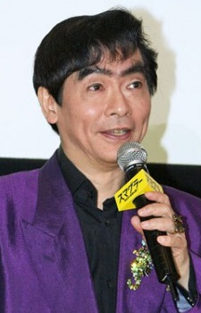

Tatsuya Gashuin is a Japanese voice actor. He voiced No Face in Spirited Away and Calcifer in Howl's Moving Castle.
- Gender: Male
- Birthday: December 10, 1950
| |
Tatsuya Gashuin is a Japanese voice actor. He voiced No Face in Spirited Away and Calcifer in Howl's Moving Castle.
|
 |
|---|
 |
Calcifer | Howl's Moving Castle | Calcifer is a fire demon that lives at Howl's Castle. He is a powerful creature according to Howl. |